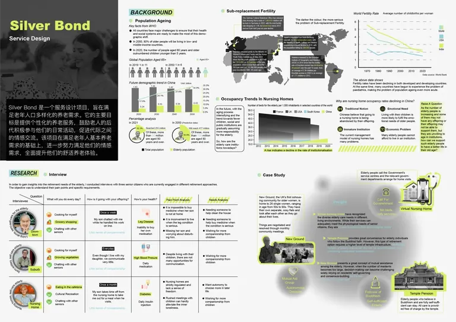

Silver Bond / 养老社区服务
把养老服务，也放进家人的日常
养老服务关乎事务，也关乎关系。Silver Bond 从养老与代际情感出发，探索社区服务如何连接长者的日常需要，以及家人的参与。

需要解决什么问题
服务供给与情感连接往往分开被讨论。方案需要同时考虑不同角色的需要，以及他们在服务过程中的接触点。
项目参与
这组设计作品将养老情境、用户需求、服务过程与移动端页面放在一起，通过研究与流程表达探索跨角色的服务体验。
关键决策与取舍
- 01
把长者与家人放进同一服务视角
关注长者需求，也将后代参与和代际交流纳入服务目标，避免只以服务管理者的任务组织体验。
- 02
先梳理触点，再设计页面
利用用户旅程组织服务阶段与机会点，再将主要任务转化为移动端界面。
- 03
让关系与服务相互支持
在社区养老情境中探索日常服务与情感互动的连接，让产品问题同时包含效率与人的感受。
产出与验证到哪里
形成背景研究、服务与用户旅程，以及移动端界面设计原稿。
服务设计与交互探索，未声称已运营服务或实际改善养老效果。
把作品展开来看
带到下一个项目的思考
跨角色产品需要理解不同人的任务，也需要看见任务背后的关系。流程设计与情感体验可以在同一个服务中被考虑。